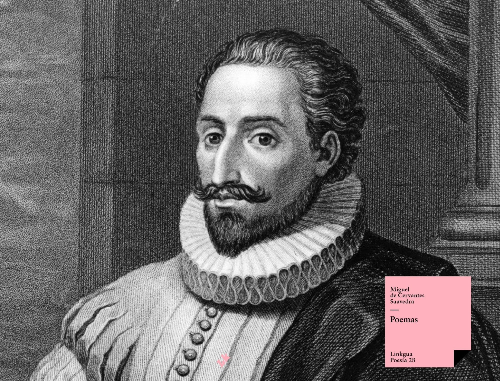
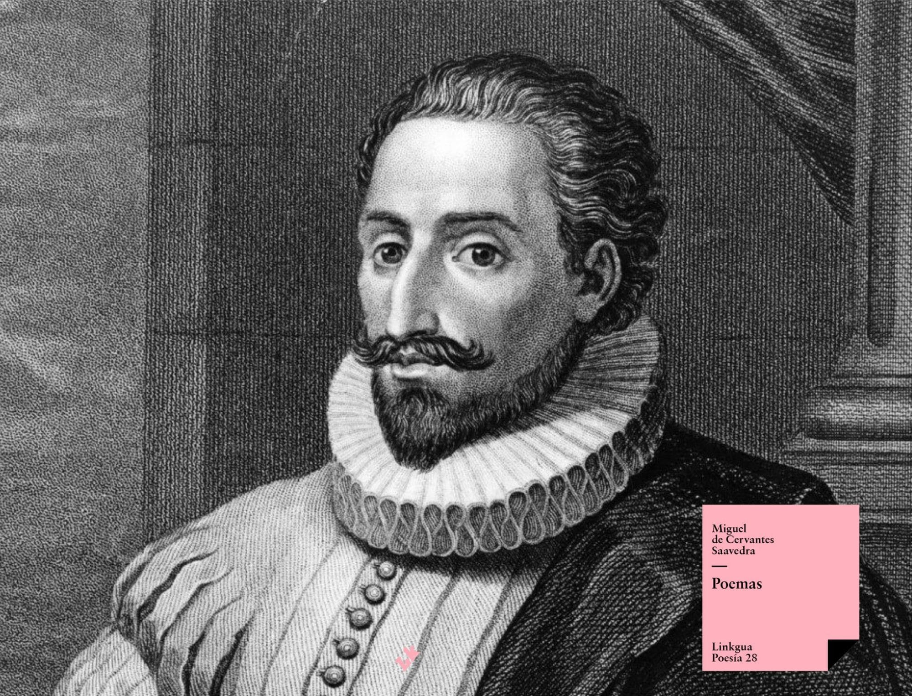

Inicio
Miguel de Cervantes Saveedra
 

"Entre los pecados mayores que los hombres cometen, aunque algunos dicen que es la soberbia, yo digo que es el desagradecimiento, ateniéndome a lo que suele decirse: que de los desagradecidos está lleno el infierno."
Porque ni el bien ni el mal pueden durar para siempre;
y así como el mal ha durado mucho tiempo, el bien ahora debe estar cerca.
"Solo una cosa tiene mala el sueño, según he oído decir, y es que se parece a la muerte, pues de un dormido a un muerto hay muy poca diferencia."
Sigue mi consejo y vive por mucho, mucho tiempo.
Porque lo más loco que un hombre puede hacer en esta vida es dejarse morir.
"¿Qué locura o que desatino me lleva a contar las ajenas faltas, teniendo tanto que decir de las mías?"